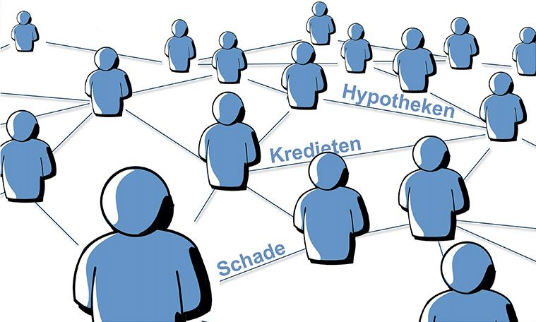

Serviceprovider onderzoek 2021
Jaarlijks voert Bureau DFO onderzoek uit naar serviceproviders binnen de financiële dienstverlening. Het onderzoek bestaat uit twee onderdelen. Een deel betreft de waardering van het intermediair met betrekking tot de dienstverlening van de serviceproviders waarvan men gebruik maakt. Dit deel van het onderzoek is gebaseerd op 2.172 waarnemingen. De resultaten geven helder aan welke elementen in de dienstverlening van serviceproviders door de doelgroep belangrijk wordt gevonden.
Artikelnummer 300308. Bestellen en betalen gaat via de webshop op dfobv.nl.
Omschrijving
Jaarlijks voert Bureau DFO onderzoek uit naar serviceproviders binnen de financiële dienstverlening. Het onderzoek van 2021 bestaat uit twee onderdelen. Een deel betreft de waardering van het intermediair met betrekking tot de dienstverlening van 24 serviceproviders waarvan men gebruik maakt. Dit deel van het onderzoek is gebaseerd op 2.167 waarnemingen. De resultaten geven helder aan welke elementen in de dienstverlening van serviceproviders door de doelgroep belangrijk worden gevonden. Maar ook welke serviceproviders op welke gebieden sterk en minder sterk zijn. Bijvoorbeeld op de elementen van:
| Algemene tevredenheid | Product en prijs | Ondersteuning acquisitie |
| Onderhoud en nazorg | Loyaliteit | NPS-score |
| Toekomstige samenwerking | Ervaren rendement van samenwerking | Belangrijkste andere serviceproviders waar eigen deelnemers ook gebruik van maken |
Kruispunt van fundamentele keuzes
Dit jaar bevat het rapport ook een uitgebreide analyse van interviews met het management van 14 serviceproviders. De interviews maken duidelijk dat veel serviceproviders op een kruispunt staan bij het maken van fundamentele keuzes die bepalend zijn voor hun toekomst. Waarbij velen op onderdelen al voorzichtig een bepaalde richting op gaan. Te voorspellen is dat de wereld van de serviceproviding in de komende jaren ingrijpend gaat veranderen.
Er zijn meerdere thema’s waar elke serviceprovider mee te maken heeft. Bijvoorbeeld:
- Focus op dienstverlening met betrekking tot de werkzaamheden van het financieel advieskantoor op het gebied van bemiddeling of meer focus op dienstverlening in de fase van advisering en frontoffice.
- Beperking van de dienstverlening op specifieke segmenten of keuze voor verbreding naar “one stop shopping”.
- Beperking tot diensten op financiële diensten of ook diensten buiten het Wft domein.
- Het commercieel inzetten van inzicht in data die de deelnemers van serviceproviders genereren.
- Hogere doorbelasting van kosten serviceproviding naar de kantoren die van deze diensten gebruik maken.
Voor elke serviceprovider is het nuttig om een beeld te krijgen welke thema’s er bij de andere serviceproviders leven en welke motieven voor het maken van de ene of de andere keuze wordt gegeven.
Visie op de actualiteit
Aan de kantoren die gebruik maken van de diensten van serviceproviders is ook een aantal vragen gesteld over actuele ontwikkelingen. Hoewel de antwoorden per gebruiker van de verschillende serviceproviders kunnen verschillen, is landelijk voor alle gebruikers het volgende beeld:
- 67% van de respondenten verwacht dat onderhoud en nazorg in de komende jaren voor hun kantoren belangrijker gaat worden;
- 64% van de respondenten geeft aan gebruik te maken van de diensten van hun serviceprovider indien deze ondersteuning op dit gebied gaat aanbieden;
- 56% hecht veel waarde aan ondersteuning bij inrichting automatisering op kantoor
- 43% hecht waarde aan ondersteuning bij marketing. Op het gebied van hypotheken is deze belangstelling veel hoger dan voor schade.
- 72% deelnemers ervaart dat door gebruik te maken van een serviceprovider hun onafhankelijkheid wordt versterkt.
Passende opleidingen en masterclasses
Opleidingen van Bureau DFO
Masterclasses van de NVHP
Ook toegankelijk voor adviseurs die geen NVHP-lid zijn.